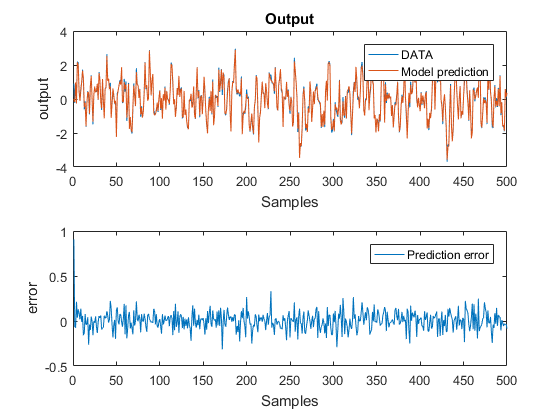

clc;clear; close all %%%%%%%%%%%%%%%%%%%%%%%%%%%%%%%%%%%%%%%%%%%% % Prediction %%%%%%%%%%%%%%%%%%%%%%%%%%%%%%%%%%%%%%%%%%%% % load the data samples and identified parameters: load pss8_data_part2.mat % Let's now use the model we found to predict the output! % Using validation data (or estimation data, just for a check) N = length(y); NN = N/2; % lets redifine the data variables so it will be easy to switch from % validation to estimation sets. yn = yval; un = uval; % yn = yest; % un = uest; % Lets do prediction first, Write your code for 1-step-ahead predictor ypred = zeros(NN,1); % that's the vector where we will store the predicted output for i=2:NN %%%%%%%%%%%%%%%%%%%%%%%%%%%%%%%%%%%%%%%%% %%%%%% Write your code here: %%%%%%%%%%%% % use the variables yn , un , ahat and bhat. ypred(i) = ahat*yn(i-1) + bhat*un(i); end % Once we have the predicted output we can compute the error with the true % data predERROR = yn-ypred; predRMSE = rms(predERROR) % plot DATA vs MODEL prediction figure(2) subplot(2,1,1) plot(yn) hold on plot(ypred) legend('DATA','Model prediction') title('Output') xlabel('Samples') ylabel('output') subplot(2,1,2) plot(predERROR) legend('Prediction error') xlabel('Samples') ylabel('error')
predRMSE =
0.1062
